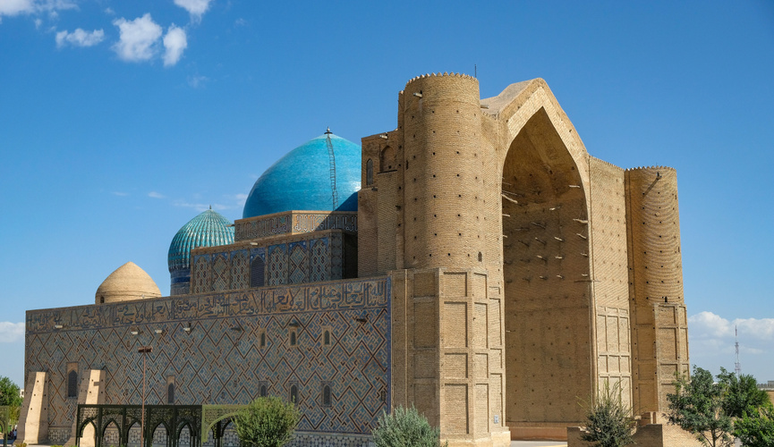
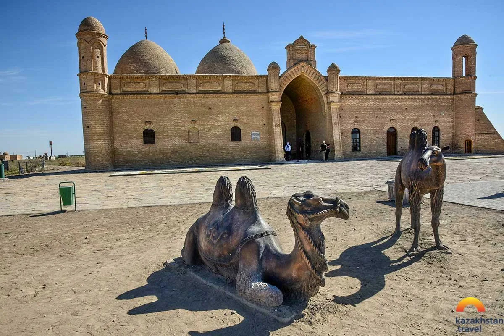
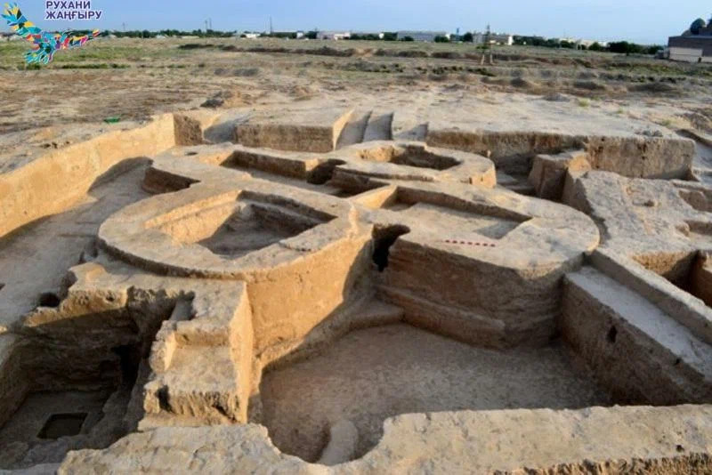
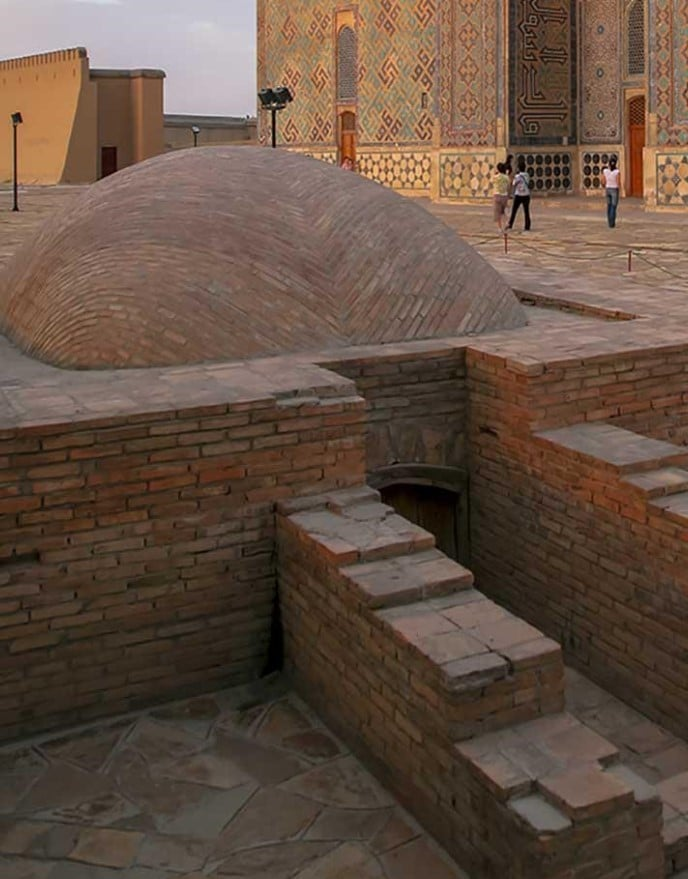

Туркестан
Туркестан – один из древнейших городов Казахстана, расположенный на юге страны, недалеко от реки Сырдарья. С 2018 года является административным центром Туркестанской области. Город признан духовным и историческим центром тюркского мира и является важнейшим местом паломничества. Он находится на пересечении автомобильных и железнодорожных путей, связывающих Азию с Европой.
Население: около 233 тысяч человек
Основан: Известен с V века н.э. как город Ясы (Яссы). Отмечал свой 1500-летний юбилей.
История
Первые поселения на территории современного Туркестана появились около 500 года нашей эры. В XII веке город прославился благодаря суфийскому поэту и философу Ходже Ахмеду Ясави, который был здесь похоронен. Название «Туркестан» (от тюркских слов, означающих «Страна тюрков») город получил в XV–XVI веках. В течение нескольких столетий, с XVI по XVIII века, Туркестан был политической и духовной столицей Казахского ханства, служил резиденцией многих казахских ханов. В современную эпоху, после обретения Казахстаном независимости, город переживает активный период возрождения и развития как крупный туристический и культурный центр.
Достопримечательности
-

Мавзолей Ходжи Ахмеда Ясави: Грандиозный архитектурный шедевр, заложенный Тамерланом в конце XIV века, является объектом Всемирного наследия ЮНЕСКО.
-

Мавзолей Арыстан-баба: Мавзолей учителя и духовного наставника Ходжи Ахмеда Ясави, расположенный недалеко от Туркестана.
-

Городище Культобе: Древние раскопки, подтверждающие многовековую историю поселения.
-

«Керуен-Сарай» (Караван-Сарай): Крупный современный туристический комплекс, построенный в восточном стиле.
-

Подземная мечеть Хильвет: Древнее культовое сооружение, связанное с Ходжой Ахмедом Ясави.
Культура
Туркестан олицетворяет духовную основу казахского народа. Его культура пропитана суфийскими традициями и наследием Великого Шелкового пути. Город является местом паломничества и одним из ключевых центров тюркской цивилизации. Современное развитие города направлено на укрепление его роли как центра туризма и культуры.
Интересные факты
- В городе расположен мавзолей, где похоронены многие казахские ханы, включая Есим-хана и Аблай-хана.
- Развитие города определено двумя основными векторами: туризм и промышленность (хлопкообрабатывающая, машиностроительная).
- В 2020 году в городе был открыт международный аэропорт, что стимулировало приток туристов и паломников.